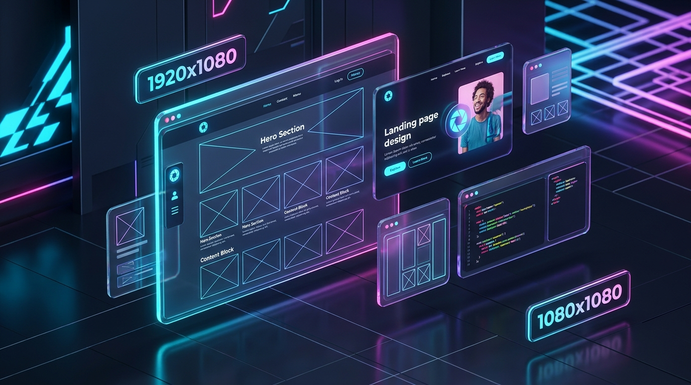

چرا استفاده از تصاویر ماکت استاندارد سرعت و کیفیت طراحی UI/UX را متحول میکند؟
در فرآیند طراحی وب و توسعه نرمافزار، تصاویر ماکت (Placeholder Images) عنصری فراتر از یک پرکننده ساده هستند. آنها سنگبنای طراحی واکنشگرا، تعیینکننده ریتم بصری قالب، و محافظ ساختار صفحات در برابر خطاهای رایج پرش چیدمان (Layout Shift) به شمار میروند. استودیو «پلیسهولدر پرو» با ترکیب موتور رندر ریاضی وکتور برداری SVG، خطوط شطرنجی وایرفریم (Blueprint Grid)، و دسترسی مستقیم به هزاران تصویر استوک باکیفیت و لایسنس آزاد، محیطی یکپارچه برای طراحان فیگما، توسعهدهندگان فرانتاند و مدیران سئو فراهم آورده است تا بدون اتلاف وقت، سناریوهای بصری محصولات خود را به شکلی کاملاً استاندارد شبیهسازی نمایند.
📐 ساختار مهندسی وایرفریم (Blueprint Grid)
حفظ تمرکز کارفرما و تیم طراحی بر روی چیدمان و تایپوگرافی قالب بدون حواسپرتی بصری ناشی از تصاویر نهایی.
⚡ مهار افت امتیاز سئو (CLS Prevention)
جلوگیری از پرش صفحه و افت شاخصهای حیاتی وب گوگل (Core Web Vitals) با رزرو دقیق نسبت ابعاد پیش از لودینگ.

۱. نقش حیاتی تصاویر Placeholder در بهبود شاخصهای حیاتی وب (Core Web Vitals)
یکی از رایجترین خطاهای توسعه فرانتاند در پروژههای بزرگ، پرش صفحه به هنگام بارگذاری تصاویر حجیم است که در سئو تحت شاخص CLS (Cumulative Layout Shift) اندازهگیری میشود. هنگامی که از تصاویر ماکت و کد تمیز `width` و `height` مشخص به همراه استایل ریسپانسیو استفاده میکنید، مرورگر کاربر پیش از دریافت بایت اول تصویر، فضای خالی باکس تصویر را دقیقاً با نسبت صحیح رزرو میکند. در نتیجه چیدمان صفحه تثبیت شده و امتیاز سرعت سایت در الگوریتمهای گوگل در بالاترین سطح ممکن قرار میگیرد.
۲. تفاوت فنی وکتور SVG خالص با تصاویر پیکسلی (PNG و WebP) در معماری فرانتاند
در این استودیو، خروجی وکتور SVG به عنوان یک کد متنی سبک و بهینهسازی شده در دسترس شماست. ماکتهای وکتوری نیاز به دانلود هیچ فایل تصویری خارجی نداشته، در هر رزولوشنی (از موبایلهای اقتصادی تا نمایشگرهای رتینا و 4K) با حداکثر وضوح ریاضی رندر میشوند و حتی در کدهای کامپوننتهای مدرن مانند React، Vue و Blade لاراول به سادگی به صورت اینلاین قابل جایگذاری هستند. در مقابل، فرمت مدرن WebP با فشردهسازی تا ۳۰ درصد بالاتر از JPEG برای شبیهسازی وزن صفحات در مرحله تست سرعت کاربرد دارد.
۳. چه زمانی از ماکتهای شماتیک و چه زمانی از تصاویر استوک واقعی (Stock Photos) استفاده کنیم؟
در فاز اولیه وایرفریمینگ (Wireframing) و طراحی ساختار سایت، استفاده از ماکتهای شماتیک مجهز به خطوط گرید (Blueprint X-Grid) و ابعاد واضح باعث میشود تمرکز کارفرما و تیم محصول به جای رنگ و لعاب عکسهای تزئینی، روی سلسلهمراتب محتوا و خوانایی متون معطوف شود. اما زمانی که در حال آمادهسازی دمو برای ارائه نهایی یا تست کامپوننتهای فروشگاهی، هیرو بنرها و کارتهای بلاگ هستید، استفاده از بخش «عکس استوک واقعی (Picsum)» حس واقعی و زنده بودن رابط کاربری را به مخاطب القا کرده و به طراح اجازه میدهد چیدمان متن روی تصاویر واقعی و کنتراست رنگها را ارزیابی کند.
۴. اهمیت رعایت نسبتهای استاندارد تصویر (Aspect Ratios) در طراحی واکنشگرا
استفاده از نسبتهای غیر استاندارد یکی از عوامل اصلی دفرمه شدن و کشیدگی عکسها در گوشیهای هوشمند است. پلیسهولدر پرو با قفل هوشمند نسبت ابعاد و پریستهای استاندارد شبکههای اجتماعی (۱:۱ مربع، ۹:۱۶ عمودی برای استوری و ریلز)، صفحات وب (۱۶:۹ ویدیویی، ۲۱:۹ التراواید هیرو و ۱.۹۱:۱ بنر Open Graph) و الگوهای کارت محصول فروشگاهی، تضمین میکند که چیدمان بصری طرح شما در تمام پلتفرمها استانداردهای بینالمللی UI/UX را حفظ نماید.